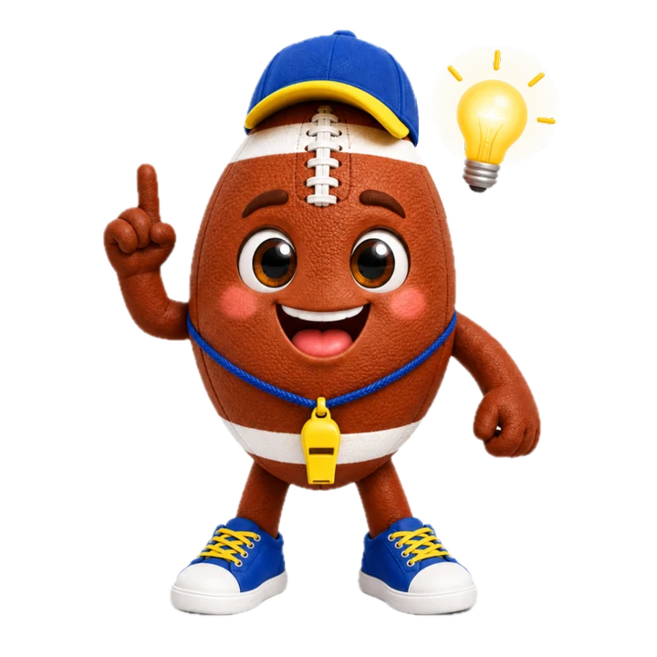

About Python Season
A free Python course for kids who know every player and every stat, and have never written a line of code.

What it is
Python Season teaches the first steps of real programming through football and baseball. Each sport has a season of ten game days. Every game day is one lesson of about 40 minutes, set in a real stadium, with real NFL or MLB numbers.
It began as a set of notebooks a parent wrote for a 10-year-old who loves the NFL. The lessons follow the order most beginner courses for ages 10 to 12 use: variables, decisions, lists, loops, functions, dictionaries, then a project of the child's own.
How a lesson works
- Guess, run, change. The child first guesses what a small piece of code will do, runs it, and then changes it.
- Real Python. The code runs inside the web page. There is nothing to install and no account to make.
- Every answer is checked. Coach Andrew looks at the result and says what went wrong in plain words, with hints that go from gentle to exact.
- A short review at the end. A few one-try questions show which ideas stuck and which need more practice.
For parents
- Who it is for: ages about 8 to 12 who can read short English sentences. No coding experience needed.
- What you need: a computer or tablet with a keyboard and a current web browser. A phone screen is too small for writing code.
- Pace: one game a week works well. A game can be split over two days.
- Same lessons as notebooks: every lab also exists as a Google Colab notebook in the project's GitHub repository.
Privacy
We built the site so that it needs nothing from a child. There is nowhere on it to type a message to us, to the coach or to anyone else.
| What | Where it goes |
|---|---|
| Name, email, account | Never asked for. There are no accounts. |
| Progress (which games are won, calendar start date, voice on or off) | Saved only in this browser on this device. Clearing the browser's site data erases it. |
| The code and answers your child types | They run inside the browser and are checked there. They are never sent to us or to anyone else. |
| The coach's voice | Recordings that are part of the site. The microphone is never used. |
| The device's internet address (IP address) | Every website's hosting company sees it in order to send the pages, and may keep it for a short time in its security logs. We use it for nothing else: not to recognize, contact or learn about anyone. |
Two parts of the game come from other services, which also see the device's internet address when they send their files: the map pictures (Mapbox) and the Python engine (jsDelivr). Fonts and everything else come from our own site.
There are no ads. We use Google Analytics to count visits and to see which lessons are used. It sets one cookie in this browser and sends Google the pages opened, the kind of device and the rough location (city or region) worked out from the internet address. Advertising features are switched off, the data is kept for two months, and we do not build profiles, try to identify anyone, or sell or share anything.
Questions about privacy? Parents can write to us through the project's GitHub page.
How the coach works
- Coach Andrew is not a chatbot. Every line he says, every hint and every check was written ahead of time by a person, and tested.
- He looks at the result of your child's code inside the browser and picks the line that fits.
- He gives hints that go from gentle to exact, not finished answers on the first try.
- He never asks for personal details, and there is no box to type to him.
If something he says is wrong or unclear, please tell us through the GitHub page above.
Where the numbers come from
- Football: the open nflverse data project (Scouting Combine results and player statistics).
- Baseball: the Lahman Baseball Database, with recent seasons from MLB's public statistics service.
- Maps: © Mapbox, © OpenStreetMap contributors; satellite pictures © Maxar.
How it's built
For the grown-ups who like to look under the hood. The whole site is plain files: web pages, a few scripts, pictures and small data tables. There is no app server, no database and no accounts behind it.
- Pages: plain HTML, CSS and JavaScript, with no framework and no build step.
- Python in the page: Pyodide, the real Python language (with the pandas and matplotlib tools) made to run inside a web browser. Your child's code runs on your own device.
- Lessons: one small file per game day holds its missions, hints and checks. When your child presses Run, the page compares the result with what the lesson expects and picks the coach's line.
- Data: trimmed copies of the open NFL and MLB data, small enough for a browser to load.
- Map: Leaflet with Mapbox map pictures.
- Coach Andrew: drawn pictures that blink and move their mouth with his voice. His voice is recordings of the lines he says, made ahead of time.
- Hosting: one small cloud server sends the files. It keeps no visit log, and it refuses to send the answer keys.
Every lesson is tested by a script that plays it from start to finish in real Python. All the code is open on the project's GitHub page.
Python Season is an independent educational project. It is not connected to, sponsored by or endorsed by the NFL, MLB or any team. Team and stadium names are used only to describe real places and statistics.